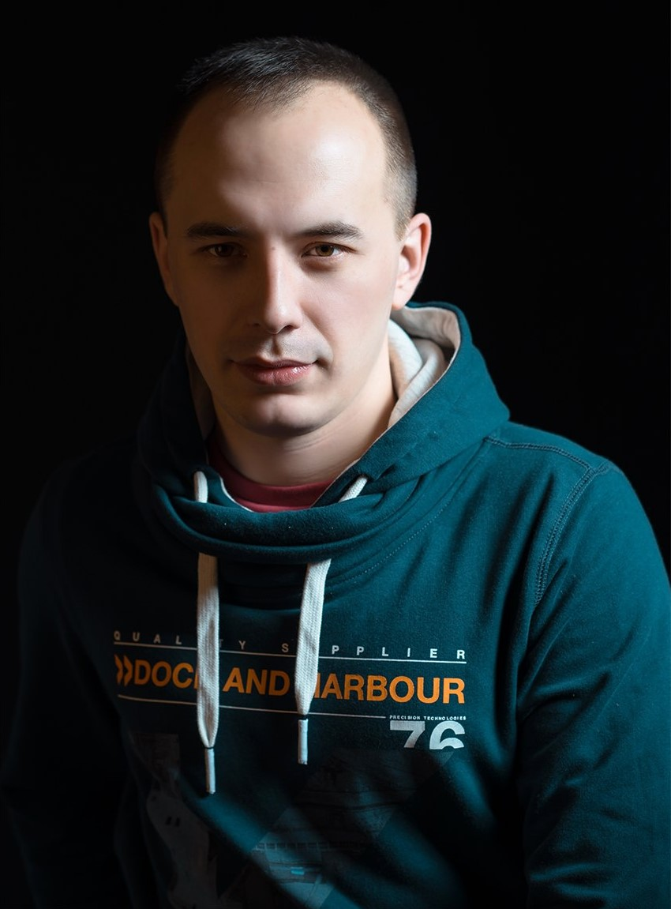

РЕЗЮМЕ


Абдуллин Ильдар Владимирович
Мужчина, 36 лет Родился 13 ноября 1985 года +7(987)4423661 — предпочитаемый способ связи ildar1385@gmail.com Проживает: г. Самара, Промышленный р-н Гражданство: Россия Готов к переезду и командировкам
Python-разработчик
Специализации: программист, разработчик Занятость: полная занятость График работы: удаленная работа, полный день Желательное время в пути до работы: не имеет значения
Опыт работы — 8 лет 11 месяца
Январь 2021 — настоящее время - 7 месяцев
Частная практика Фрилансер
Осуществляю помощь студентам ВУЗов г. Самара и г. Уфа в изучении программирования на языке Python. Помогаю учащимся развить логическое мышление в решении задач по программированию. В летней сессии 2022 года 8 моих учеников получили следующие оценки при сдаче экзамена по информатике: 5 студентов - отлично, 3 студента - хорошо. Пример скрипта по решению задач на Python представлен в моем портфолио.
Октябрь 2021 — Январь 2022 - 4 месяца
Заказчик ИП Иванов • Разработка программного обеспечения Фрилансер(вэб-разработчик)
Малый бизнес. Разработка прикладного программного обеспечения. По пожеланиям заказчика на основе VK_API и библиотеки requests Python, разработал небольшую программу для удобства пользователя по работе со своими фотографиями в ВК. Также на основе встроенной в Python библиотеки Tkinter, разработал самое простое приложение для заметок. Прототипы программ представлены в моем портфолио.
Июль 2021 — Сентябрь 2021 - 3 месяца
Заказчик ИП Батыршин • Производство мультимедиа, контента, редакторская деятельность Фрилансер(разработчик)
Малый бизнес. В связи с профессиональной деятельностью заказчика по его техническому заданию спроектировал Инфологическую схему и разработал на ее основе базу данных музыкальных поп исполнителей. Пример БД я отобразил в моем портфолио.
Май 2017 — Март 2021 - 3 года 11 месяцев
Министерство Обороны РФ Руководитель подразделения Государственные организации.
Постановка задач и организация их выполнения, контроль выполнения поставленных задач. Распределение обязанностей между подчиненными. Обеспечение взаимодействия с сотрудниками разных уровней. Выстраивание межличностных взаимоотношений в коллективе.
Июнь 2013 — Май 2017 - 4 года
ГУ МВД России по Самарской области Инженер-программист
- Проектирование и участие в проектах по разработке реляционных баз данных. - Администрирование баз данных. Разработал принцип единой заявки на автоматическую регистрацию ролей пользователей в служебной базе данных без участия Администратора данной базы. В данном функционале появились возможности автоматического продления периода действия учетной записи, а также автоматического удаления ранее созданных дублей учетных записей пользователей БД. Осуществил ряд доработок, а именно по уменьшению затрачиваемого времени на поиск и выгрузку необходимой сотрудникам информации по еженедельным и ежемесячным отчетам из БД.
Образование
Высшее
2008 год, Самарский государственный технический университет, Электротехнический факультет, Автоматизированные электроэнергетические системы и сети.
Повышение квалификации, курсы
2022 год, Нетология, Программирование. Разработчик(программист) на Python.
2021 год, АВТОНОМНАЯ НЕКОММЕРЧЕСКАЯ ОРГАНИЗАЦИЯ ДОПОЛНИТЕЛЬНОГО ПРОФЕССИОНАЛЬНОГО ОБРАЗОВАНИЯ "САМАРСКИЙ ЦЕНТР ЭЛЕКТРОННОГО ОБУЧЕНИЯ". Разработка сайтов и веб-дизайн.
Ключевые навыки
Знание языков: Русский — Родной, Английский — B1 — Средний, Навыки: Python, SQL, DBeaver, Postman, PostgreSQL, Git, Django Framework, HTML и CSS верстка, PyCharm, Visual Studio Code, Notepad++, Brackets, API, Организаторские навыки, Коммуникабельность, Выполнение поставленных задач точно и в срок. Имеется собственный автомобиль и права категории B.
Дополнительная информация
Обо мне:
Основное время уделяю изучению языка программирования Python. Стремлюсь постоянно совершенствовать свои навыки, чтобы стать профессионалом в разработке на Python. Стараюсь браться за самую сложную работу, ведь опыт в профессии программиста - это основа успеха.